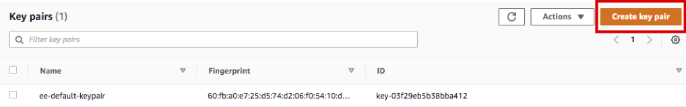
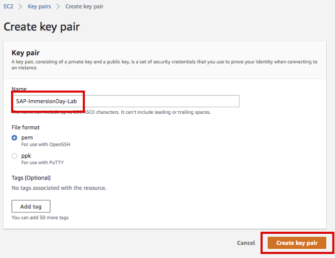
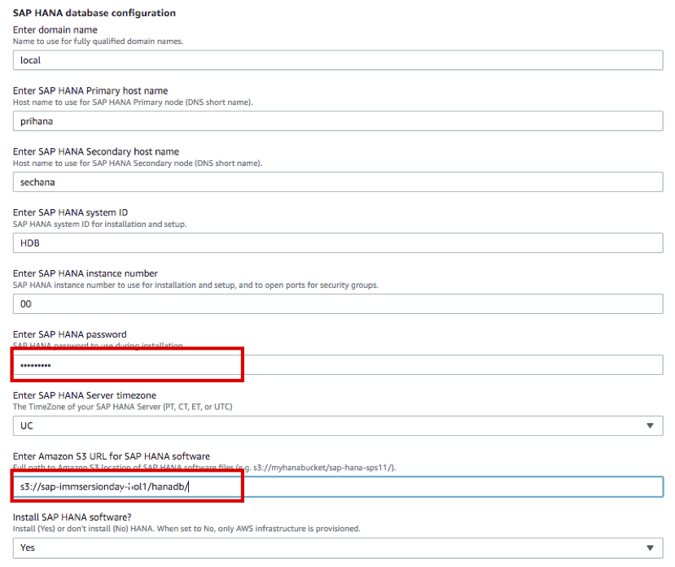

Task 01. SAP HANA Quick Starts
Easily configure SAP HANA High Availability Architecture using SAP HANA Quick Starts.
- Considerations
- The OS of each node in this lab will be configured with SUSE Linux Enterprise 12 SP4.
- SAP HANA Quick Starts are set to Performance Optimized Scenario. For more information, please refer to the link below.
Pre-work : Create Key Pairs
Create a Key Pair to access HANA Database and Application Servers.
- After log in AWS Management Console, connect to Key Pairs Console.
- Click Create key pair. 
- Enter Name as SAP-ImmersionDay-Lab, Click Create key pair. 
- In this WorkShop, you will access HANA DB instances through AWS Systems Manager Session Manager, and in the case of Bastion Host (Windows Server 2019), you will decrypt Administrator Password using this key pair and access it through a remote access program. Store the downloaded key in a safe location.
- You are going to create and use a Bastion Host in Lab02
SAP HANA Quick Starts
There are many options for installation in SAP HANA Quick Starts. In this Lab, you configure HANA Database in a new VPC based on Multi-AZ. For more information on SAP HANA Quick Starts, please refer to the link below.(SAP HANA Quick Start Guide)
-
After log in to AWS Management Console, access SAP HANA Quick Starts service.
-
Make sure the region is US East(N.Virginia), then click Next.
-
Don’t change the stack name unless it’s the same name you used previously.
-
Step2.Specify stack details is the step to enter the VPC, SAP HANA, and SAP S/4HANA ABAB Cluster setup options for S4HANA installation.
-
Enter Step2.1 Network infrastructure configuration option as follows.
- VPC CIDR(default) : 10.0.0.0/16
- Availability Zones for subnet creation(choice) : us-east-1a, us-east-1b
- CIDR block for Private subnet 1(default) : 10.0.1.0/24
- CIDR block for Private subnet 2(default) : 10.0.2.0/24
- Enter CIDR block for Public subnet 1(default) : 10.0.3.0/24
- Enter CIDR block for Public subnet 2(default) : 10.0.4.0/24

-
Enter Step2.2 Server and storage configuration option as follows.
- Choose operating system for SAP HANA : SuSELinux12SP4ForSAP-BYOS
- Enter SUSE BYOS Registration Code : XXXXXXXXXXXXXXXX (Enter your registration code)
- Choose instance type for SAP HANA : r5.4xlarge
- Enter Dedicated Host ID :
- Choose key pair : SAP-ImmersionDay-Lab
- Choose storage volume type for SAP HANA Log : gp2
- Choose storage volume type for SAP HANA Data : gp2
- Would you like to turn on encryption? : no

-
Enter Step2.3 SAP HANA database configuration option as follows.
- Enter domain name : local
- Enter SAP HANA Primary host name : prihana
- Enter SAP HANA Secondary host name : sechana
- Enter SAP HANA system ID : HDB
- Enter SAP HANA instance number : 00
- Enter SAP HANA password : Init12345!
- Enter SAP HANA Server timezone : UC
- Enter Amazon S3 URL for SAP HANA software : (e.g s3://sap-immsersionday-hol1/hanadb/)
- Install SAP HANA software? : Yes 
-
Step2.4 SAP HANA High Availability configuration option, use the default setting
- HANA Primary Site Name : HAP
- HANA Secondary Site Name : HAS
- Overlay IP Address : 192.168.1.99
- Pacemaker Tag Name : PaceTag

-
Step2.5 Optional configuration RDP and Bastion settings will be covered in Lab02, so select No without change. Skip the rest of the options.

-
Step2.6 Advanced configuration (Do not modify unless directed by AWS Support) option, use the default setting. click Next.

-
Step3.Configure stack options is the step to set Stack execution options.
-
When errors occur, change the Rollback option to Disabled for easy trouble shooting. then select Next.

-
Step4.Review is a step to check the previous settings. Select the two check boxes at the bottom of Capabilities and click Create stack.

-
SAP-HANA-HA has been created. Wait until the Status changes CREATE_COMPLETE.


If errors occur, contact the Solutions Architect
Lab01 lab has completed. Next, proceed to Lab02.
© 2020, Amazon Web Services, Inc. or its affiliates. All rights reserved.